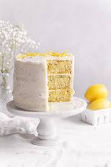

Why lemon poppyseed cake is the best
Zesty Flavor: The bright, citrusy flavor of lemon adds a refreshing tang that balances the sweetness of the cake. This combination makes every bite feel light and invigorating.
Unique Texture: The addition of poppy seeds provides a subtle crunch, enhancing the cake's overall texture. This contrast between the moist cake and the tiny seeds makes each bite interesting.
Versatile: Lemon poppyseed cake can be enjoyed at any time of day—whether as a breakfast treat, an afternoon snack, or a dessert. It pairs wonderfully with tea or coffee, making it a perfect companion for gatherings.
Aesthetic Appeal: The specks of black poppy seeds against the pale yellow cake create a visually appealing presentation. A simple glaze or frosting can elevate its look even further.
Fresh and Light: Unlike richer desserts, lemon poppyseed cake feels light and refreshing, making it a great choice for spring and summer events, or anytime you want a treat that won’t weigh you down.
Nostalgic Quality: For many, lemon poppyseed cake evokes memories of family gatherings and celebrations, adding a sentimental value to its deliciousness.
Overall, lemon poppyseed cake combines flavor, texture, and visual appeal in a way that makes it a standout dessert.
My favourite recipe
